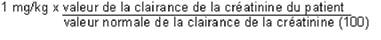

RÉSUMÉ DES CARACTÉRISTIQUES DU PRODUIT
ANSM - Mis à jour le : 28/11/2011
GENTAMICINE PANPHARMA 80 mg, solution injectable
2. COMPOSITION QUALITATIVE ET QUANTITATIVE
Sulfate de gentamicine
quantité correspondant à ........................................................................................... 80,0 mg de gentamicine
Pour une ampoule de 2 ml.
Pour la liste complète des excipients, voir rubrique 6.1.
Solution injectable.
4.1. Indications thérapeutiques
Elles procèdent de l'activité antibactérienne et des caractéristiques pharmacocinétiques de la gentamicine. Elles tiennent compte à la fois des études cliniques auxquelles a donné lieu le médicament et de sa place dans l'éventail des produits antibactériens actuellement disponibles.
Elles sont limitées:
· aux infections à bacilles gram-négatif définis ci-dessus comme sensibles, notamment dans leurs manifestations rénales et urologiques.
· l'association de la gentamicine avec un autre antibiotique pourra être justifiée dans certaines infections à germes sensibles en se basant sur les données bactériologiques, en particulier dans leurs manifestations:
o rénales, urologiques et génitales,
o septicémiques et endocarditiques,
o méningées (en y adjoignant un traitement local)
o respiratoires,
o cutanées (staphylococcie cutanée maligne de la face)
o articulaires.
· prophylaxie des infections post-opératoires:
o en chirurgie urologique (résections endoscopiques de prostate, tumeurs endo-vésicales),
o pour les patients allergiques aux bêta-lactamines en:
§ chirurgie digestive sous mésocolique en association à un imidazolé ou à la clindamycine,
§ chirurgie carcinologique ORL avec ouverture du tractus oropharyngé en association à la clindamycine,
§ chirurgie gynécologique en association à la clindamycine,
§ amputation de membre en association à la clindamycine.
· prophylaxie médicale:
o prophylaxie de l'endocardite infectieuse au cours des interventions urologiques et digestives, en association à l'amoxicilline, ou à un glycopeptide en cas d'allergie aux bêta-lactamines.
Il convient de tenir compte des recommandations officielles concernant l'utilisation appropriée des antibactériens.
4.2. Posologie et mode d'administration
La voie intramusculaire est la voie élective. Elle doit toujours être utilisée lorsqu'elle est accessible. Lorsque la voie I.M. est impraticable, on peut utiliser la voie I.V, en perfusion discontinue: la quantité de gentamicine à administrer est de 1 mg/kg à diluer dans du sérum physiologique ou glucose isotonique à raison d'au moins 1 ml de sérum pour 1 mg d'antibiotique soit, chez l'adulte: de 100 à 200 ml de sérum environ. Cette perfusion doit durer entre 30 et 60 minutes et être renouvelée:
· toutes les 8 heures chez le norme-rénal,
· à des intervalles de temps plus prolongés chez l'insuffisant rénal (voir Posologie).
Depuis la mise à disposition des aminosides, il a été montré qu'il était possible, par la même posologie quotidienne de réduire le nombre d'administrations. Classiquement le nombre d'injection était de 3 par jour, notamment pour les posologies maximum, parfois de 2 par jour. L'expérience acquise indique qu'en général le nombre d'injection est de 2 voire une seule par jour:
· La dose quotidienne peut être administrée en une injection quotidienne (IM ou perfusion courte):
o chez les patients de moins de 65 ans
o à fonction rénale normale
o lorsque le traitement n'excède pas 10 jours
o en l'absence de neutropénie
o à l'exclusion des infections à germes Gram positif
o pour des infections à germes Gram négatif, à l'exclusion des Pseudomonas et des Serratia.
Dans ces circonstances, une efficacité au moins identique et une tolérance parfois meilleure ont été démontrées avec une injection quotidienne par rapport aux modalités classiques (q. 8 heures).
· dans les autres cas, l'administration bi-quotidienne de la dose usuelle est le plus souvent recommandée, en dehors de l'insuffisance rénale qui implique le maintien des mesures habituelles.
Les dosages plasmatiques sont utiles lorsque le traitement doit dépasser 7 à 10 jours; une concentration résiduelle inférieure à 2 mcg/ml indique que le rythme d'administration choisi est adapté aux capacités d'épuration du patient.
Posologie
Les posologies seront adaptées à la sévérité de l'infection, à l'état et à l'âge du malade.
I - Chez le sujet normo-rénal
Adultes:
3 mg/kg/jour en 2 ou 3 injections I.M.
Enfants:
3 mg/kg/jour en 3 injections I.M. (1 mg/kg toutes les 8 heures)
Nourrissons:
3 mg/kg/jour en 3 injections I.M. (1 mg/kg toutes les 8 heures) sous contrôle des taux sériques de l'antibiotique
Nouveau-nés (à terme ou prématuré):
3 à 6 mg/kg/jour en 2 injections par voie I.V., en perfusion, sous contrôle des taux sériques de l'antibiotique.
II - Chez le sujet insuffisant rénal
Il est indispensable de procéder à un ajustement de la posologie, de surveiller, de façon régulière, les fonctions rénale, cochléaire et vestibulaire et de pratiquer, dans toute la mesure du possible, des dosages sériques de contrôle. Les valeurs de la créatinine sérique ou de la clairance de la créatinine endogène sont les meilleurs tests pour apprécier l'état de la fonction rénale et procéder à une adaptation de la posologie de la gentamicine:
A. Ajustement de la posologie en fonction des valeurs de la créatinine sérique
Il est possible:
· soit de conserver une dose unitaire de 1 mg/kg et d'espacer le rythmes des injections. L'intervalle (en heures) entre deux doses unitaires est obtenu en multipliant par 0,8 la valeur de la créatinine sérique (en mg/l).
· soit de conserver un intervalle de 8 heures entre les injections en réduisant la dose unitaire administrée. Dans ce cas, après une dose de charge 1 mg/kg, on injecte toutes les 8 heures une dose réduite obtenue en divisant la dose de charge par le dixième de la valeur de la créatinine sérique (en mg/l).
B. Ajustement de la posologie en fonction de la clairance de la créatinine endogène
On procède à une injection initiale de 1 mg/kg. Les doses suivantes à réinjecter toutes les 8 heures sont calculées selon la formule:
Les valeurs des clairances étant exprimées en ml/min.
Dans l'hémodialyse périodique: injection initiale de 1 mg/kg, par voie I.V. lente, à la fin de chaque séance de rein artificiel.
Dans la dialyse péritonéale: injection initiale de 1 mg/kg, par voie I.M. En cours de dialyse, les pertes sont compensées par addition de 5 à 10 mg de gentamicine par litre de liquide de dialyse.
· prophylaxie des infections post-opératoires en chirurgie: l'antibioprophylaxie doit être de courte durée, le plus souvent limitée à la période per-opératoire, 24 heures parfois, mais jamais plus de 48 heures.
o chirurgie urologique: 2 à 3 mg/kg, soit habituellement chez l'adulte 160 mg en perfusion unique IV de 30 minutes, 30 minutes avant le début de l'intervention, ou par voie IM, 1 heure avant le début de l'intervention.
o autres chirurgies: 1,5 mg/kg en dose unique IV de 30 minutes, 30 minutes avant l'intervention, ou en IM, 1 heure avant l'intervention, en association à un imidazolé, ou à la clindamycine.
· prophylaxie de l'endocardite infectieuse:
1,5 mg/kg en IV de 30 minutes, 30 minutes avant le geste, ou en IM, 1 heure avant le geste, en association.
· Allergie aux antibiotiques de la famille des aminogycosides
· Myasthénie.
4.4. Mises en garde spéciales et précautions d'emploi
Mises en garde spéciale:
Ce produit contient des sulfites qui peuvent éventuellement entraîner ou aggraver des réactions de type anaphylactique.
Précautions d'emploi
· Chez les sujets porteurs d'anomalie vestibulaire et cochléaire,
· La. néphro-toxicité et l'otoxicité de la gentamicine imposent les précautions d'emploi suivantes:
o en cas d'insuffisance rénale, n'utiliser la gentamicine qu'en cas de stricte nécessité et adapter la posologie en fonction ce la clairance de la créatinine. Une surveillance médicale portant sur les fonctions rénale et auditive est nécessaire. Les taux sériques de l'antibiotique seront contrôlés, dans toute la mesure du possible, afin d'éviter de dépasser de façon prolongée le seuil toxique de l'appareil cochléo-vestibule ire que l'on situe à 10 - 12 mcg/nl.
De même, des taux sériques résiduels supérieurs à 2 mcg/ml sont à éviter.
o compte tenu de la pharmacocinétique du produit et du mécanisme de l'ototoxicité et de la néphrotoxicité, éviter les traitements itératifs et/ou prolongés, particulièrement chez les sujets âgés.
o éviter d'associer la gentamicine aux diurétiques très actifs et, en général, à tout produit ototoxique et néphrotoxique.
· La gentamicine peut potentialiser l'action du curare, des myorelaxants et des anesthésiques généraux
· En cas d'intervention chirurgicale, informer l'anesthésiste-réanimateur de la prise de ce médicament
4.5. Interactions avec d'autres médicaments et autres formes d'interactions
· Curare, myorelaxants, certains anesthésiques.
· Eviter de mélanger la gentamicine dans un même flacon ou une même seringue avec un autre médicament, en particulier avec un antibiotique de la famille des bêta-lactanines.
Problèmes particuliers du déséquilibre de l'INR
De nombreux cas d'augmentation de l'activité des anticoagulants oraux ont été rapportés chez des patients recevant des antibiotiques. Le contexte infectieux ou inflammatoire marqué, l'âge et l'état général du patient apparaissent comme des facteurs de risque. Dans ces circonstances, il apparaît difficile de faire la part entre la pathologie infectieuse et son traitement dans la survenue du déséquilibre de l'INR. Cependant, certaines classes d'antibiotiques sont davantage impliquées: il s'agit notamment des fluoroquinolones, des macrolides, des cyclines, du cotrimoxazole et de certaines céphalosporines.
L'utilisation de ce médicament est déconseillé au cours de la grossesse en raison d'un risque potentiel d'ototoxicité et de néphrotoxicité fœtales. Son utilisation sera strictement limitée aux pathologies infectieuses graves.
En effet, en clinique quelques cas d'atteinte cochléo-vestibulaire néonatale ont été décrits avec les aminosides, notamment la streptomycine et la kanamycine, et, les études animales ont mis en évidence une atteinte cochléaire et rénale.
Dans le cas d'une exposition à ce médicament en cours de grossesse, une évaluation de la fonction auditive (autoémissions) et rénale du nouveau-né est recommandée.
Le passage des aminosides dans le lait maternel est documenté, cependant les concentrations retrouvées dans le lait sont faibles voire négligeables. Le risque majeur consisterait en une modification de la flore intestinale de l'enfant. En conséquence, l'allaitement est possible en cas de traitement bref (quelques jours) par ce médicament et si la fonction rénale maternelle est normale. En cas de survenue de troubles digestifs chez le nourrisson (candidose intestinale, diarrhée), il est nécessaire d'interrompre l'allaitement.
4.7. Effets sur l'aptitude à conduire des véhicules et à utiliser des machines
Des atteintes cochléo-vestibulaire ont été rapportées lors de l'utilisation de la gentamicine.
Les patients doivent être informés que dans cette éventualité l'aptitude à conduire des véhicules et à utiliser des machines peut être altérée.
· Néphrotoxicité
Ce médicament appartient à la famille des aminosides pour laquelle des cas d'insuffisance rénale ont été rapportés. Ils étaient, la plupart du temps, en rapport avec une posologie trop élevée ou des traitements prolongés, des altérations rénales antérieures, des troubles de l'hémodynamique ou des associations à des produits réputés néphrotoxiques.
· Ototoxicité
Ce médicament appartient à la famille des aminosides pour laquelle des cas d'insuffisance rénale ont été rapportés. Ces cas d'atteinte cochléo-vestibulaire ont été signalés. Ils étaient favorisés par une posologie trop élevée, une longue durée du traitement, une insuffisance rénale pré-existante ou car des associations à des produits ototoxiques.
· Des réactions allergiques mineures (rasa, urticaire) ont été décrites. Ces phénomènes ont cessé à l'arrêt du traitement.
En cas de surdosage ou d'atteinte toxique, une hémodialyse ou une dialyse péritonéale peut être mise en place pour procéder à une épuration seringue accélérée de l'antibiotique. Les techniques d'épuration extra-rénale sont particulièrement indiquées chez les sujets atteints d'insuffisance rénale.
5. PROPRIETES PHARMACOLOGIQUES
5.1. Propriétés pharmacodynamiques
CARACTERISTIQUES GENERALES
La gentamicine est un antibiotique de la famille des aminoglycosides.
SPECTRE D'ACTIVITE ANTI-BACTERIENNE
Les concentrations critiques séparent les souches sensibles des souches de sensibilité intermédiaire et ces dernières, des résistantes :
streptocoques, entérocoques : S £ 250 mg/l et R > 500 mg/l
autres bactéries : S £ 4 mg/l et R > 8 mg/l
La prévalence de la résistance acquise peut varier en fonction de la géographie et du temps pour certaines espèces. Il est donc utile de disposer d’informations sur la prévalence de la résistance locale, surtout pour le traitement d’infections sévères. Ces données ne peuvent apporter qu’une orientation sur les probabilités de la sensibilité d’une souche bactérienne à cet antibiotique.
Lorsque la variabilité de la prévalence de la résistance en France est connue pour une espèce bactérienne, elle est indiquée dans le tableau ci-dessous :
|
Catégories |
Fréquence de résistance acquise en France (> 10%) (valeurs extrêmes) |
|
ESPÈCES SENSIBLES |
|
|
Aérobies à Gram positif |
|
|
Corynebacterium |
|
|
Listeria monocytogenes |
|
|
Staphylococcus méti-S |
|
|
Staphylococcus méti-R * |
40 - 60 % |
|
Aérobies à Gram négatif |
|
|
Acinetobacter (essentiellement Acinetobacter baumannii) |
50 - 75 % |
|
Branhamella catarrhalis |
|
|
Campylobacter |
|
|
Citrobacter freundii |
|
|
Citrobacter koseri |
|
|
Enterobacter aerogenes |
40 - 70 % |
|
Enterobacter cloacae |
0 - 15 % |
|
Escherichia coli |
|
|
Francisella |
|
|
Haemophilus influenzae |
|
|
Klebsiella |
0 - 10 % |
|
Morganella morganii |
|
|
Proteus mirabilis |
0 - 20 % |
|
Proteus vulgaris |
|
|
Pseudomonas aeruginosa |
5 - 40 % |
|
Salmonella |
|
|
Serratia |
5 - 30 % |
|
Shigella |
|
|
Yersinia |
|
|
Autres |
|
|
Bartonella |
|
|
ESPÈCES MODÉRÉMENT SENSIBLES |
|
|
(in vitro de sensibilité intermédiaire) |
|
|
Aérobies à Gram négatif |
|
|
Pasteurella |
|
|
Catégories |
|
|
ESPÈCES RÉSISTANTES |
|
|
Aérobies à Gram positif |
|
|
Entérocoques** |
|
|
Nocardia asteroïdes |
|
|
Streptococcus |
|
|
Aérobies à Gram négatif |
|
|
Alcaligenes denitrificans |
|
|
Burkholderia |
|
|
Flavobacterium sp. |
|
|
Providencia stuartii |
|
|
Stenotrophomonas maltophilia |
|
|
Anaérobies |
|
|
Bactéries anaérobies strictes |
|
|
Autres |
|
|
Chlamydia |
|
|
Mycoplasmes |
|
|
Rickettsies |
|
* La fréquence de résistance à la méticilline est environ de 30 à 50 % de l’ensemble des staphylocoques et se rencontre surtout en milieu hospitalier.
** Dans certaines indications, la gentamicine peut être utilisée en association, en particulier avec les bêta-lactamines (septicémies, endocardites). Toutefois, la synergie est abolie lorsque les espèces impliquées (streptocoques, entérocoques) présentent une résistance acquise de haut niveau à la gentamicine (5 – 20 % des souches).
5.2. Propriétés pharmacocinétiques
Distribution
· Concentrations sériques
o Chez le sujet présentant une fonction rénale normale
Après administration par voie I.M. à la dose unitaire de 1 mg/kg, le pic sérique, atteint au bout de 30 à 60 minutes, est de l'ordre de 4 mcq/ml Des concentrations plasmatiques actives persistent pendant environ 6 heures.
Il est possible de procéder, toutes les 8 heures, à des réinjections de la dose unitaire de 1 mg/kg sans qu'il en résulte d'accumulation sérique
o Chez le sujet insuffisant rénal
Le pic sérique est légèrement plus élevé et les concentrations plasmatiques sont plus prolongées Il convient d'espacer les réinjections de la dose unitaire de 1 mg/kg en fonction de l'importance de l'atteinte rénale (voir rubrique 4.2).
o Demi-vies
La demi-vie de la gentamicine est d'un peu plus de 2 heures chez l'adulte normo-rénal.
Elle est de 3,0 - 3,30 h chez le nourrisson et de 5,25 - 5,50h chez le nouveau-né.
En présence d'un déficit de la fonction rénale, cette demi-vie est d'autant plus allongée que le déficit est plus important.
o Diffusion tissulaire et humorale
Après administration par voie parentérale, la gentamicine est retrouvée dans la plupart des tissus et liquides biologiques.
Des taux thérapeutiques sont présents dans le sérum.
Les concentrations dans le parenchyme rénal sont très supérieures aux taux plasmatiques.
Des concentrations de l'ordre de 40 pour cent et plus sont retrouvées dans les sécrétions bronchiques, l'os infecté, le liquide et le tissu synovial, la peau, la plèvre, le péricarde, la cavité péritonéale et le liquide d'ascite.
La gentamicine ne pénètre pas dans la prostate.
Elle traverse la barrière fœto-placentaire.
Par contre, elle ne franchit pratiquement pas la barrière hémo-méningée et le traitement des méningites nécessite une administration intrathécale de l'antibiotique associé à une administration par voie générale.
Le passage dans le lait maternel est négligeable.
La gentamicine diffuse à travers les membranes utilisées dans les hémodialyses.
o Liaison aux protéines plasmatiques
Aux taux thérapeutiques et-dans des conditions physiologiques normales, la liaison de la gentamicine aux protéines plasmatiques est faible, comprise entre 0 et 3 pour cent.
Biotransformation
La gentamicine ne subit pas de transformation métabolique.
Excrétion
L'excrétion de l'antibiotique est essentiellement rénale par filtration glomérulaire sous ferre non métabolisée et, par conséquent, active. Il existe une petite réabsorption tubulaire. En moyenne, 60 pour cent de la dose injectée sent éliminés dans les urines au cours des 6 crémières heures et 85 pour cent au bout de 24 heures.
L'élimination urinaire décroît parallèlement au degré de l'insuffisance rénale.
Cependant, chez les insuffisants rénaux non anuriques, les concentrations urinaires obtenues dans les échantillons recueillis de 12 à 24 heures après l'injection (8 à 10 mcg/ml) restent supérieures à la C.M.I. des germes sensibles.
La clairance rénale de la gentamicine décroît au prorata de l'insuffisance rénale, mais sans modification significative du rapport clairance rénale/clairance de la créatinine qui reste voisin de 60 à 70 pour cent.
Les concentrations biliaires sent généralement basses reflétant une élimination biliaire faible.
5.3. Données de sécurité préclinique
Non renseignée.
Parahydroxybenzoate de méthyle, parahydroxybenzoate de propyle, hydrogénosulfite de sodium en solution, édétate de sodium, eau pour préparations injectables.
La teneur de l'hydrogénosulfite de sodium en solution exprimée en anhydride sulfureux est de 2 mg par flacon de 2 ml.
Sans objet.
3 ans.
6.4. Précautions particulières de conservation
Pas de précautions particulières de conservation.
6.5. Nature et contenu de l'emballage extérieur
1, 10 ou 25 ampoules (verre).
6.6. Précautions particulières d’élimination et de manipulation
Pas d'exigences particulières.
7. TITULAIRE DE L’AUTORISATION DE MISE SUR LE MARCHE
PANPHARMA SA
ZI DU CLAIRAY
35133 LUITRE - FOUGERES
8. NUMERO(S) D’AUTORISATION DE MISE SUR LE MARCHE
· 326 950-1: 2 ml en ampoule (verre).
· 556 824-8: coffret de 25 ampoules (verre).
· 351 204-8: 2 ml en ampoule (verre); coffret de 10 ampoules.
9. DATE DE PREMIERE AUTORISATION/DE RENOUVELLEMENT DE L’AUTORISATION
[à compléter par le titulaire]
10. DATE DE MISE A JOUR DU TEXTE
[à compléter par le titulaire]
Sans objet.
12. INSTRUCTIONS POUR LA PREPARATION DES RADIOPHARMACEUTIQUES
Sans objet.
Liste I